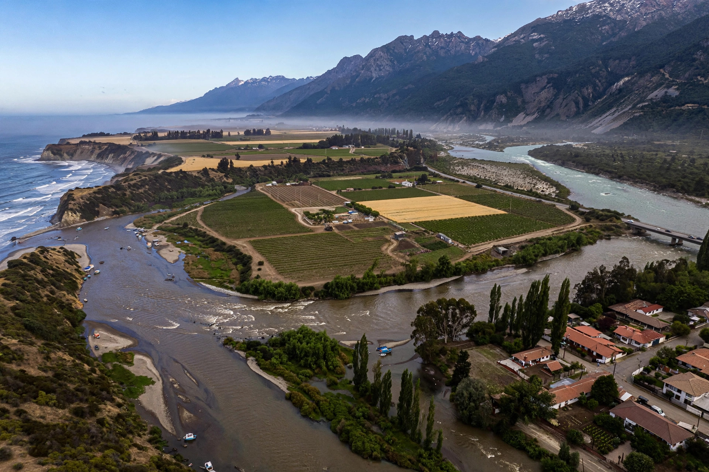

| Maule River | |
|---|---|
| Native name | Río Maule |
| Location | Chile, Maule Region |
| Source | Laguna del Maule, Andes |
| Mouth | Pacific Ocean, near Constitución |
| Length | about 240 km (150 mi) |
| Basin size | about 20,300 km² |

The Maule River (Spanish: Río Maule) is one of the most important rivers in central Chile. Rising in Laguna del Maule in the Andes near the Argentine border, it flows generally westward for roughly 240 kilometres across the Maule Region before emptying into the Pacific Ocean just north of the port city of Constitución.
The river drains a basin of more than 20,000 square kilometres. Its principal tributaries include the Claro, Puelche, Cipreses, and Loncomilla rivers. The upper valley is mountainous and used for hydroelectric generation, while the lower valley forms part of Chile's Central Valley, a major agricultural and wine-producing area.
The name Maule, from Mapudungun mauñ or related forms associated with rain, marked a historic frontier. The river formed the southern border of the Inca Empire's expansion and later a boundary between Spanish colonial territory and Mapuche lands to the south. The Battle of the Maule, fought in Inca times against Mapuche forces, is traditionally placed on its banks. During the Chilean War of Independence the region was heavily contested.
Dams on the Maule and its tributaries, notably at Colbún and Machicura, supply electricity and irrigation water. The basin supports vineyards producing Maule Valley wine, forestry, and farming. Native fish and Andean condor habitat persist in the upper reaches.
See also: Constitución, Maule Region